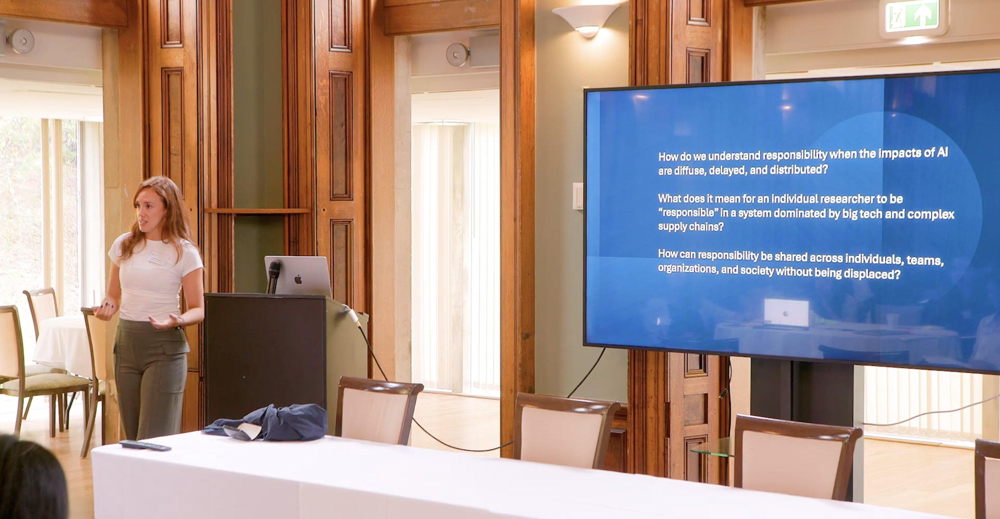

Sustainability of AI Workshop — Organiser & Speaker
2025
Work

I speak on AI, sustainability, responsible innovation, environmental justice, and the social implications of emerging technologies.
2025
2025
2025
2024
Topics: AI & Society · AI & Sustainability · Responsible Innovation · Environmental Justice · Technology & Ethics · Energy Transitions · Critical Raw Materials · Technology & Society
Interested in inviting me to speak?
emilyrobinson91@outlook.comCollaborated with the Alan Turing Institute on research exploring interpretive and hermeneutical approaches to AI. The work examined how AI systems can engage with contested knowledge, societal values, and plural interpretations of environmental and climate issues.
Focus: AI · Hermeneutics · Interpretivism · Sustainability
PhD research within the Environmental Intelligence CDT examining how values, interpretation, and societal tensions shape emerging technologies. The research combined computational social science, qualitative interviews, and STS across AI and decarbonisation technologies.
Focus: Technology & Society · AI · Sustainability · Public Discourse · Responsible Innovation
Interdisciplinary research investigating the societal and environmental impacts of the technologies and raw materials underpinning the green transition. Combined spatial data analysis with qualitative and multi-stakeholder engagement to examine accountability, justice, and governance in extractive industries.
Focus: Critical Raw Materials · Green Transition · Environmental Justice · Governance
Collaborated across the Environmental Intelligence research community to explore how AI, data, and environmental science can be brought together with social science and humanities perspectives.
This work has included research and workshops examining the social, ethical, and environmental implications, and the challenges of developing more reflexive approaches to Environmental Intelligence.
Focus: Environmental Intelligence · AI · Interdisciplinarity · Sustainability